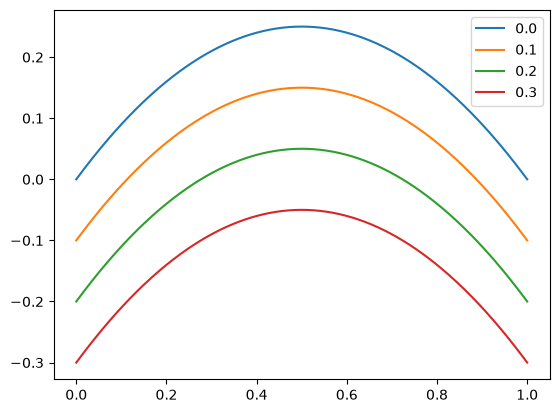
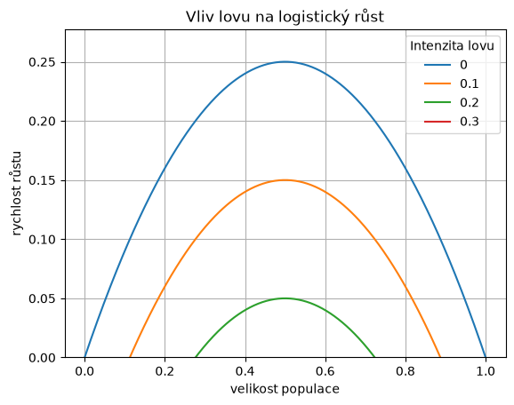

Kreslení funkcí pro pokročilé#
Jednoduché úkoly je vhodné řešit jednoduše a nejjednodušší je data kreslit do grafu rovnou po výpočtu. Ve složitějších modelech se však data počítají dlouho a je proto nejlepší je nejprve vypočítat a potom vykreslit. K ukládání se hodí tabulky. Snadné je použití knihovny Pandas.
Je dobré nejprve zavolat knihovny a nastavit proměnné, sestavit tabulku, vykreslit grafy a poté dodělat kosmetické úpravy. To je v jednotlivých políčkách. Na konci práce bude asi vhodné poslední čtyři políčka spojit. Zkontrolujte, že jste v příkazovém modu (needitujete políčko, nalevo je modrá čára a ne zelená), označte spojované buňky (shift plus šipky) a spojte (shift + M). Případně neznačujte a shift+M připojí následující buňku. Stejnou práci odvede Menu -> Edit -> Merge Cell Bellow).
import numpy as np
import matplotlib.pyplot as plt
import pandas as pd
N = 500
meze = [0,1]
lov = [0,0.1,0.2,0.3]
x = np.linspace(*meze,N)
def logisticky_rust(x,h=0):
"""
Funkce definuje pravou stranu logisticke rovnice s pridanym lovem konstantni intenzity.
"""
r = 1
K = 1
return(x*r*(1-x/K) - h)
# První metoda, výpočet dat a poté vložení do tabulky
data = [logisticky_rust(x,h=h) for h in lov]
df = pd.DataFrame(data).T
df.columns = lov
df.index = x
# Druhá metoda, skládání tabulky po sloupcích
# df = pd.DataFrame()
# df.index = x
# for h in lov:
# df[h] = logisticky_rust(x,h=h)
# Varianta obou, data vypočteme po sloupcích a potom sestavíme tabulku
#
# data = np.full([len(x),len(lov)],np.nan)
# for i,h in enumerate(lov):
# data[:,i] = logisticky_rust(x,h=h)
# df = pd.DataFrame(data, columns=lov)
# df.index = x
# Dalsi varianta vyuziva datovy typ dictionary, podle nej se nastavi automaticky jmena sloupcu
# data = {h: logisticky_rust(x,h=h) for h in lov}
# df = pd.DataFrame(data)
# df.index = x
df
| 0.0 | 0.1 | 0.2 | 0.3 | |
|---|---|---|---|---|
| 0.000000 | 0.000000 | -0.100000 | -0.200000 | -0.300000 |
| 0.002004 | 0.002000 | -0.098000 | -0.198000 | -0.298000 |
| 0.004008 | 0.003992 | -0.096008 | -0.196008 | -0.296008 |
| 0.006012 | 0.005976 | -0.094024 | -0.194024 | -0.294024 |
| 0.008016 | 0.007952 | -0.092048 | -0.192048 | -0.292048 |
| ... | ... | ... | ... | ... |
| 0.991984 | 0.007952 | -0.092048 | -0.192048 | -0.292048 |
| 0.993988 | 0.005976 | -0.094024 | -0.194024 | -0.294024 |
| 0.995992 | 0.003992 | -0.096008 | -0.196008 | -0.296008 |
| 0.997996 | 0.002000 | -0.098000 | -0.198000 | -0.298000 |
| 1.000000 | 0.000000 | -0.100000 | -0.200000 | -0.300000 |
500 rows × 4 columns
fig, ax = plt.subplots()
df.plot(ax=ax)
<Axes: >

ax.legend(lov, title="Intenzita lovu")
ax.set(title="Vliv lovu na logistický růst",
xlabel="velikost populace",
ylabel="rychlost růstu",
ylim=(0,None))
ax.grid()
fig
